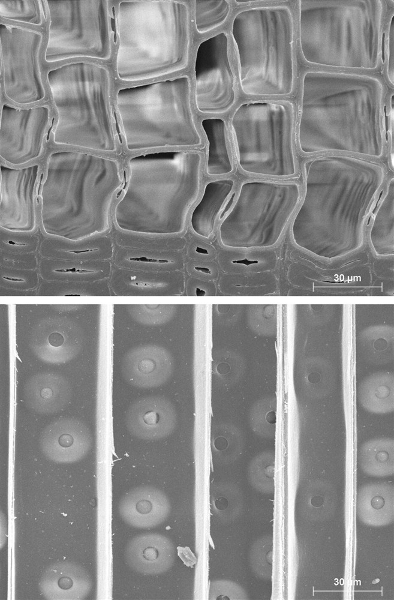

가도관 (Tracheid)

쉽게 풀면
가도관은 침엽수 목재를 이루는 길쭉한 대롱 모양의 세포이다. 마치 여러 개의 빨대를 세로로 나란히 세워 붙여 놓은 것처럼, 물을 위로 끌어올리는 통로 역할과 동시에 나무를 지탱하는 기둥 역할을 함께 한다.
왜 중요한가
가도관은 침엽수재 조직의 대부분을 차지해 그 배열과 두께가 목재의 강도, 밀도, 가공성을 좌우하기 때문에, 목재해부학과 목재공학 연구에서 침엽수재를 이해하는 출발점으로 다뤄진다. 가도관은 화학펄프 제조 시 리그닌을 제거하면 그대로 종이 섬유가 되므로, 가도관의 길이와 세포벽 두께는 침엽수 펄프의 품질을 좌우하는 핵심 변수로 다뤄진다. 가도관의 형태와 배열은 목재의 투과성에도 영향을 주어, 방부제나 접착제가 목재 내부로 얼마나 잘 스며드는지를 예측하는 데도 참고된다.
어디에 있고 어떻게 생겼나
- 가도관(tracheid)은 유관속식물의 물관부(xylem)에 있는 길고 끝이 뾰족한 리그닌화 세포이며, 물을 나르는 세포(tracheary element)의 한 종류이다.
- 기능적으로 성숙하면 죽어 있고 원형질이 없다. 세포벽의 벽공(pit)을 통해 이웃 세포로 물이 흐른다.
- 소나무 같은 겉씨식물(침엽수)의 목재는 주로 가도관으로 이루어진다. 양치식물의 1차 물관부에서도 주된 수송 세포이다.
- 피자식물에는 가도관과 함께 또 다른 수송 세포인 도관 요소(vessel element)가 있다. 가도관에는 천공판이 없다.
맡은 기능
- 물관부의 기본 역할은 물과 녹아 있는 영양분을 뿌리에서 줄기와 잎으로 올리는 것이다. 세포가 죽어 있어 물의 이동은 수동적이다.
- 응집력-장력 이론(1894년 존 졸리와 헨리 호레이쇼 딕슨이 제안)에 따르면 잎의 증산이 장력을 만들어 물을 끌어올린다. 물 분자 사이의 수소 결합이 응집력을, 친수성 세포벽에 대한 달라붙음이 부착력을 준다.
- 리그닌화한 세포벽은 가도관에 구조적 지지를 주어 목질 줄기가 만들어질 수 있게 했다.
- 가도관 벽의 벽공은 매우 작아 공기가 들어가 기포가 생기는 것을 막는다. 테두리 벽공은 진화 과정에서 나중에 나타나, 공동화와 색전의 위험을 줄이면서 세포 사이 수송을 허용한다.
연구에서 다루는 방식
- 가도관은 한 세포이므로 길이와 쓸 수 있는 지름이 제한된다(쓸 수 있는 최대 지름은 약 80 μm). 가도관 목재는 도관이 공동화에 견디도록 보강해야 하는 목재보다 가볍고 만드는 비용이 적다.
- 진화적으로 가도관은 초기 유관속식물의 유일한 수송 세포로 화석 물관부에서 약 1억 4천만~1억 5천만 년 동안 유일했다. 이후 피자식물에서 도관 요소와 섬유로 갈라졌다. 독일 식물학자 카를 구스타프 자니오가 1863년에 이 세포를 명명했다.
- 논문에서는 가도관의 길이와 지름, 벽공 형태를 현미경 관찰로 측정해 보고한다.
논문에서는 이렇게 쓰입니다
실제 논문에서
국내 학술지 논문에서 이 용어가 쓰인 문장을 그대로 옮겼다. 제목·학술지·연도와 원문 링크를 함께 적었다.
“일부 축방향가도관(axial tracheid)에서는 2차벽에 동공(cavity)을 형성하는 Type-I 연부후(soft rot)가 관찰 되었으나, 그 빈도는 매우 낮았다.”
영흥도선 선체 부재의 미생물 분해 유형 및 특징, 보존과학회지, 2025 · KCI 한국학술지인용색인 · 원문 보기 ↗
조금 더 깊게 보면
가도관은 형성 시기에 따라 세포벽이 얇고 지름이 큰 조재가도관과, 세포벽이 두껍고 지름이 작은 만재가도관으로 나뉘며 이 둘의 비율이 연륜 내 밀도 변화를 만든다. 활엽수재에서 수분 통도를 전담하는 도관 요소와 달리, 가도관은 통도와 지지 기능을 한 세포가 함께 담당한다는 점이 큰 차이이다. 가도관은 세포벽에 있는 테두리 벽공(유연벽공)이라는 작은 구멍을 통해 옆의 가도관과 수분을 주고받으며, 이 벽공막이 부후나 건조 과정에서 폐쇄되면 목재의 통도성과 방부제 침투성이 크게 떨어진다. 가도관의 세포벽에는 마이크로피브릴이라는 셀룰로오스 다발이 나선형으로 배열되어 있으며, 이 나선의 각도(마이크로피브릴각)가 작을수록 목재의 강성이 높아지는 것으로 알려져 있다.
주의할 점
가도관은 침엽수재의 주된 조직이므로, 활엽수재의 도관 요소와 혼동하지 않도록 유의해야 한다.
가도관의 길이는 나무 밑동에서 수관 쪽으로 갈수록 달라질 수 있어, 시료 채취 위치를 명시하지 않으면 결과 비교가 어려워진다.
참고 문헌
- Wikipedia contributors. (n.d.). Tracheid. Wikipedia.
- Wikipedia contributors. (n.d.). Xylem. Wikipedia.